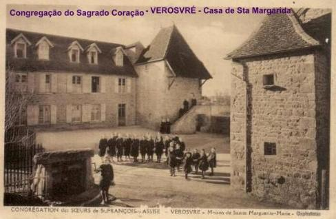
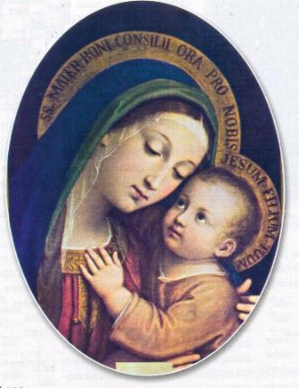
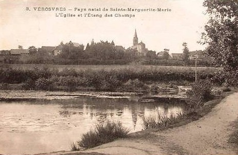
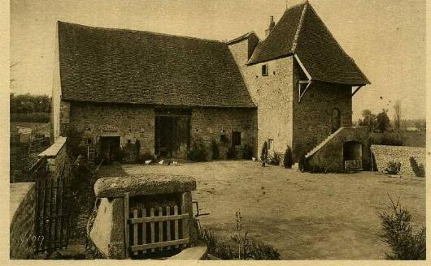
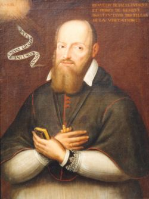

OS PRIMEIROS ANOS
O senhor Cláudio
Alacoque era Juiz e Tabelião Real dos Feudos de Terreau, de Corcheval
e de outros locais. Casou-se em
1639 com Felisberta Lamyn.
Para felicidade do casal, DEUS os tinha escolhido para serem o pai e a mãe
de uma admirável menina, batizada com o nome de Margarida, que ia ser uma
puríssima estrela de santidade na constelação da Igreja, além de tornar
ilustre e famoso o nome da famélia Alacoque.
Eram cinco os
filhos do casal e todos viviam nas amplas acomodações do Castelo de Corcheval
com seus parentes.
Margarida
nasceu na aldeia de Lhautecour Território de Charolês Verosvres, Diocese de
Autun, na Bretanha, perto de Dijon, na França, numa segunda-feira, dia 22 de
julho de 1647 e foi batizada na quinta-feira, três dias após o seu nascimento.
Teve como padrinhos o seu tio Antonio Alacoque, que era o pároco de Verosvres e
por madrinha, Margarida de Saint-Amour, casada com o senhor Cláudio de
Fautrières Corcheval, senhor de Corcheval.
Para conhecermos
tudo o que se passou na alma daquela criança e depois jovem religiosa, DEUS quis
que a chave para o santuário fosse preservada. Esta chave é o manuscrito original
da Autobiografia da Santa (Memoire), que ela escreveu.
Por repugnância de permanecer em evidáncia, não queria atender ao pedido do
Padre Rolin, um jesuíta que foi o seu Diretor Espiritual durante os anos 1685-1686,
que insistiu na publicação daqueles notáveis acontecimentos sobrenaturais. Mas,
diante da ordem do SENHOR ela cedeu e escreveu todos os fatos, de maneira simples,
objetiva e encantadora, de modo que o escrito é um precioso tesouro do Mosteiro
de Santa Maria da Visitação em Paray Le Monial.
"Ó meu único amor! Como Vos agradeço de impedir a minha juventude precoce,
fazendo-se meu Mestre e possuidor do meu coração... Assim que me apercebi do
SENHOR, ELE me fez ver a feiúra do pecado que imprimiu tanto horror ao meu
coração, que a menor falta me era um tormento insuportável. Desse modo, para
impedir a vivacidade da minha infância, sempre pronta a uma natural travessura,
tinha apenas que me dizer que aquilo era ofensivo a DEUS, para me deter e não
praticar o que eu queria fazer".
INFÂNCIA E JUVENTUDE

Quando Margarida atingiu a idade de quatro anos, a sua nobre madrinha
levou-a para o seu Castelo e a entregou aos cuidados de duas de suas melhores serventes,
para lidar e atender a sua amada afilhada. Todavia, sendo muito diferente o
humor daquelas duas pessoas, seu discernimento a fez compreender que a Graça
Divina habitava a alma de apenas uma daquelas duas mulheres, de quem mais
se aproximou e cultivou a amizade.
O SENHOR lhe tinha dotado
de tais impulsos especiais, que usava para manter a sua pureza, a qual , "mesmo sem saber o que aquilo
significava", ela se sentia continuamente
pressionada a dizer estas palavras: "Ó meu Deus, Vos consagro a minha pureza e Vos faço o voto de
perpétua castidade". Uma vez
ela pronunciou estas mesmas palavras durante a Santa Missa na hora da
Consagração, entre as duas elevações da Hóstia e do Célice. Assim, sem que
sua inteligência soubesse, já estava marcada com um selo Divino.
Seu maior
prazer era invocar a SANTÍSSIMA VIRGEM MARIA, recitando o Rosário,
de joelhos na terra nua, ou fazendo tantas genuflexões beijando a terra à medida
que pronunciava a Ave Maria.
O primeiro passo
que DEUS proporcionou a nossa Santa no caminho do sacrifício foi triste e
doloroso. Com sete anos e alguns meses de idade, teve que voltar para junto
de seus pais. Em 1654, morreu sua irmãzinha Gilberta com um mal que assolou
a região. Logo a seguir, com 41 anos de idade, também faleceu o seu pai. Ele
além de ser um pai amoroso e cheio de atenções, era altamente considerado no
país, porque era uma pessoa de honra e acima de tudo, um verdadeiro cristão.
Sua esposa, senhora Felisberta Alacoque, ficou na incumbência da guarda e
proteção dos cinco filhos, além dos compromissos domêsticos. Por essa razão
para não negligenciar na educação da filha, resolveu levá-la para uma pensão
particular, na Casa dos Urbanistas de Charolles (Assim eram conhecidas as
Irmãs Clarissa que seguiam a Regra instituída pelo Papa Urbano IV). Foi lá
que Margarida entrou em contato com a Doutrina cristã e pelo seu interesse
em conhecer o assunto com seriedade, fez a Primeira Comunhão com apenas
9 anos de idade, quando naquela época, o comum era o recebimento da
Primeira Eucaristia aos 12 anos de idade.
Falou Margarida:
"Esta comunhão
derramou tanta alegria e tanto amor em meu coração, que ocupava a minha
mente e dominava a minha vontade. Eu não sentia qualquer estimulo e nenhum
prazer em participar dos divertimentos na comunidade religiosa, embora
participasse de algumas brincadeiras para não parecer uma pessoa diferente
junto das monjas"
Amigável e
modesta, a jovem pensionista fez amizade com todas as pessoas. Olhando para
os seus professores como se fossem santos, e fazendo da santidade uma bandeira
obrigatória aos religiosos, cresceu nela a vontade de também ser religiosa para
ser Santa. Mas não conhecendo a Regra de outras Comunidades Religiosas a não
ser daquela Casa das Clarissa, onde morava, pensou "que deveria continuar lá", de acordo com sua ingênua expressão.
Mas depois de dois
anos no Colégio, foi obrigada a retornar ao lar em virtude de séria doença.
Entre os dez e quinze anos de idade, ficou presa ao leito com um incômodo
problema de reumatismo nas articulações. Alguns diziam que era paralisia.
A verdade é que ela ficou semi-paralítica e tão magra, que dizia: "os ossos me furavam a pele
por todos os lados", e não podia andar.
Os médicos esgotaram toda a sua ciência e não conseguiram nenhum resultado
satisfatório.
Margarida lembrou-se de
NOSSA SENHORA e raciocinou:"A SANTÍSSIMA VIRGEM sempre teve um cuidado muito especial
e carinhoso comigo. A Ela sempre eu recorri em todas as minhas aflições e necessidades,
e sempre recebi Dela, uma preciosa atenção e o fervor de seu amor maternal. Também
foi Ela que me defendeu e protegeu contra todos os grandes perigos que rondaram a
minha vida".
Decidiu consagrar-se a NOSSA
SENHORA, prometendo-lhe que, se ficasse curada, seria uma de suas filhas religiosas.
"Apenas fiz o voto", declara Margarida, "fiquei logo curada da doença com a preciosa proteção da SANTÍSSIMA VIRGEM
MARIA. Ela tomou posse inteira do meu coração, olhando-me como sua filha. Ela me
governava como coisa e propriedade sua que lhe fora consagrada"
Em pouco tempo, as feridas
cicatrizaram, e todos os vestígios da doença desapareceram. Assim, NOSSA SENHORA
se tornou a Diretora Espiritual de Margarida, além de MÃE inigualável, a quem
entregou a sua vida, dedicando-lhe todo o seu amor e atenção. Conta Margarida,
que a VIRGEM MARIA também
"me repreendia quando eu cometia alguma falta"
Certo dia, Margarida rezando
o Terço ajoelhada no chão, resolveu sentar-se num banco, buscando a sua comodidade.
NOSSA SENHORA maternalmente lhe sussurrou: "Suas orações Me proporcionarão maior alegria se você
minha filha, continuar rezando ajoelhada".
Aquele aviso da
Mãe do Céu acordou Margarida, que como filial recompensa, decidiu jejuar todos
os sábados em honra à VIRGEM MARIA, rezar o Oficio da Imaculada Conceição e
fazer "sete genuflexões todos
os dias de sua vida, com sete Aves Maria, em homenagem as sete dores da MÃE DE
DEUS"!
A
FAMÍLIA E AS PROVAÇÕES
Desde a morte do marido, a senhora Alacoque foi despojada de sua autoridade
em sua própria casa.
Ela vivia com sua filha Margarida sujeita a uma verdadeira
servidáo. A perseguição era contínua, e assim permaneceu ao longo dos anos.
Margarida teve de sofrer uma espécie de martírio que somente DEUS sabia.
Silenciosamente padecia como mais um meio de sua purificação espiritual.
Havia três pessoas
naquela casa, que a Santa tinha o cuidado de ocultar os nomes, apenas se
contentando de chamar-lhes: "os queridos benfeitores da minha alma; os verdadeiros
amigos da minha alma" (eram a Avó
Paterna, senhora Jeane Delaroche, sua Tia Paterna, senhora Benoîte Alacoque,
esposa de Toussaint Delaroche, e sua Tia-Avó Paterna, senhora Benoîte de Meulin,
viúva de Simon Delaroche e mãe de Toussaint). Estas três pessoas não cessavam de
controlar as suas ações e, sobretudo, na maneira particular delas, cada uma oprimia
Margarida e sua mãe, de modo que a sujeição era tripla e a humilhação sempre
renovada. Uma crueldade sem fim!
O que aumentava mais as angústias da Santa eram as freqüentes doenças de sua
mãe. Ela se via destituída de todos os meios, inclusive dos mais elementares,
para ajudar a aliviar ou minorar as dores que ela sentia. Uma vez o seu castigo
chegou ao extremo: vendo sua mãe sofrer terrivelmente de uma erisipela, mesmo não
sendo malignos os tumores, seus parentes não se aproximava para ajudar de modo
algum, ao contrário, colocavam todos os obstáculos para ela, a filha, não fazer
os necessários curativos nas feridas, que com dedicação e coragem ela realizava.
Margarida, triste
e consumida pela dor foi a Santa Missa no dia da Circuncisão do SENHOR e
fervorosamente suplicou a JESUS a cura de sua pobre mãe. De retorno a residáncia
encontrou sua mãe chorando e sofrendo com as feridas abertas. Explicou a Santa:
"Sem outro remédio que aquele da
Divina Providáncia, fez os curativos com tanta confiança na Bondade de DEUS, que
em poucos dias as feridas foram secando e sua mãe ficou completamente curada,
contra todas as expectativas humanas".
Nas suas
desolações interiores e nos combates que o mundo e o amor de sua mãe envolviam o
seu coração, ela não tinha outro refúgio ou qualquer outra força para consolar
as suas tristezas, se não ir ao local onde encontrava consolação para as suas
aflições e muito mais. Descreve Margarida: "Diante do SANTÍSSIMO SACRAMENTO eu me sentia tão segura e
absorta, que nunca me aborrecia. Ali passaria dias e noites inteiras sem comer e
nem beber, somente rezando e adorando o SENHOR, consumindo-me em sua presença
como uma tocha acesa que se esvai, para retribuir-LHE o seu Divino Amor com o
meu modesto, mas sincero amor".
Margarida
continuava o seu próprio aprendizado, e NOSSO SENHOR lhe fazia ver a beleza das
virtudes, especialmente os três votos de pobreza, castidade e obediência, LHE
dizendo que "a prática
faz o Santo". Margarida explicou:
"na oração, eu LHE pedi para me
tornar Santa. E como eu não li nenhum livro sobre a Vida dos Santos, disse: eu
tenho de buscar a Vida de um Santo mais fácil de imitar, de modo que assim, eu
poderei fazer o que o Santo fez, para também me tornar Santa. Mas o que me
deixava mais triste era ver que tantas pessoas ofendiam o meu DEUS".
DRAMA
DE CONSCIÊNCIA

Em 1663 Margarida sofreu
um rude golpe. Seu irmão mais velho, João, que tinha acabado os estudos em
Charolles e estava pronto a iniciar sua carreira profissional de notário, aos 23 anos
de idade teve sua vida ceifada pela morte.
O segundo irmão, Carlos
Felisberto, tendo concluído igualmente os estudos, voltou para casa. Por causa de
possíveis problemas financeiros e principalmente, porque desejava ter um lar. Ele
não queria continuar no Castelo de Corcheval junto com os parentes, e por essa razão,
ele e a mãe idealizaram um plano para casar Margarida, já com 20 anos de idade. A
famélia Alacoque era bem relacionada e estimada em toda a região. E Margarida,
embora não fosse rica, tinha o suficiente para um dote digno, e possuía, sobretudo,
a qualidade excepcional de seu caráter, de um espírito vivo e inteligente.
A pressão que os
parentes fizeram sobre a adolescente foi terrível. Escreveu Margarida:
"O carinhoso amor da minha
extremosa mãe vinha acompanhado de uma imposição, e sempre justificado
por uma infinidade de razões: ligadas a famélia e aos bens materiais. Era quase
uma súplica que exigia a minha colaboração. Então, comecei a olhar o mundo
que não conhecia e a adornar-me para agradar, procurando divertir-me o
quanto fosse possível. Entretanto, com um divertimento responsável, sem
jamais ofender a DEUS".
E assim,
durante 6 anos, Margarida hesitava na escolha, permanecendo na balança sem se
decidir entre os divertimentos do mundo junto com o pedido de sua mãe e o eterno
Amor de DEUS. Ela não se esquecia de seu desejo de entrar na vida religiosa e
por isso também, se lembrava da promessa que fez a VIRGEM MARIA, assim como,
estava presente em seu coração as atenções, a proteção e o carinhoso amor
revelado por DEUS em sua vida.
Sentindo-se
incapaz de discernir por si própria, Margarida assumiu a intenção de auxiliar os
necessitados: dedicando-se aos enfermos, ensinando catecismo às crianças, e,
sobretudo, mantendo-se corajosa e aceitando voluntariamente sofrer a tirania dos
parentes da famélia. "Decidi
também me distrair com minhas amigas, entretanto, de uma maneira descente, sem
ofender NOSSO SENHOR".
Mas é interessante
ouvir a Santa confessar as suas próprias tentações e fraquezas:
"Eu apenas queria
encontrar prazer na posse da minha liberdade pessoal."
E ainda: "Eu começava a ver o mundo e a me enfeitar para me satisfazer
interiormente, procurando me distrair o quanto possível, arrancando aquela
dávida de meu coração."
Margarida
vivia um desagradável drama íntimo, na incerteza de como proceder: respondendo
ao chamado de Deus e entrando num Mosteiro, ou atendendo aos pedidos de sua mãe,
para que permanecesse no mundo, se casasse e constituísse famélia.
A maior
pressão que sentia era da sua mãe. Isto porque, se ela se casasse e constituísse
um lar, ia retirá-la daquela humilhante servidáo que vivia no Castelo de
Corcheval, junto com os outros familiares.
Descreve
Margarida em sua Autobiografia:
"Todavia, se mamãe era persistente em seus objetivos materiais, NOSSO SENHOR
era persistente em sua misericórdia infinita. Numa festa de Carnaval em que
participei fantasiada com algumas amigas, só para me distrair, retornando ao meu
quarto e tirando aqueles malditos enfeites de Satanás, instrumentos da malícia
do demônio, experimentei a imagem do meu soberano SENHOR. Triste e magoado, ELE
me apareceu como na flagelação, completamente desfigurado, fazendo-me terríveis
queixas: mostrando-me que as minhas vaidades o tinham reduzido àquele estado. O
SENHOR disse que eu estava perdendo um tempo tão precioso, que Ele me haveria de
pedir rigorosa conta à hora da morte, porque eu O estava atraiçoando e O
perseguindo, mesmo depois DELE me ter dado tantas provas de amor e de me ter
mostrado o seu desejo de me levar para o seu Divino Reino".
"Ó meu DEUS, somente depois compreendi aquilo que o SENHOR me fez conhecer
e experimentar, que o Vosso SAGRADO CORAÇÃO me tinha concebido no Calverio com
terrível dor, e, portanto, a vida que o SENHOR me deu não podia se alimentar se
não do alimento da Cruz, que será o meu precioso e delicioso manjar".
VOCAÇÃO
RELIGIOSA
Por razões que
não nos cabe registrar aqui, o Arcebispo Doni de Attichi e o Bispo Roquette, de
Autun, ambos permaneceram longo tempo sem visitar a sua Diocese.
Assim, Margarida foi forçada por esta circunstância a receber o Sacramento da
Confirmação (Crisma), em 1669, com a idade de vinte e dois anos, das mãos de Dom
João de Maupeou, Bispo de Chalon-sur-Saúne.
ambos permaneceram longo tempo sem visitar a sua Diocese.
Assim, Margarida foi forçada por esta circunstância a receber o Sacramento da
Confirmação (Crisma), em 1669, com a idade de vinte e dois anos, das mãos de Dom
João de Maupeou, Bispo de Chalon-sur-Saúne.
Mas a
Providáncia Divina não faz nada ao acaso. Nesta época ela já não tinha mais
qualquer dávida quanto a sua decisão, em relação ao caminho de sua vida. E
também, é importante realçar, que sendo justamente este, o período em que a alma
de nossa Santa atravessava a tempestade da perseguição, ela foi revestida do
poder do alto por uma nova efusão de graças do ESPÍRITO SANTO, através
da Crisma. Mais do que nunca, ela iria precisar dessa poderosa força.
E também, NOSSO SENHOR
não deixava de protegê-la e encorajá-la. Disse ela: "Uma vez eu estava me sentindo no fundo de um poço,
espantada com todos os defeitos, infidelidades que eu via em mim, os quais não
foram capazes de fazer com que eu fosse repelida pelo SENHOR".
JESUS me deu esta resposta: - "É porque eu quero fazer de você um composto do Meu
Amor e da Minha Misericórdia".
"E outra vez ELE me disse":
"EU escolhi você para minha esposa e NÓS nos prometemos
fidelidade, quando você ME fez o voto de castidade! Foi a MIM que você se
apressou em fazer, antes que o mundo existisse em seu coração. Porque EU a quero
toda pura e sem estar contaminada por afeições terrestres, para mantê-la como
está. Por isso, EU tirei toda a malícia de sua vontade, para que você não fosse
corrompida. E depois, EU vou colocá-la aos cuidados de minha MÃE SANTÍSSIMA, a
fim de que Ela faça de você conforme a Minha Imagem".
O diabo,
suspeitando que aquela alma estivesse escapando dele, jogou contra ela nova
carga de tentação. Margarida as indica com humildade: "Satanás me dizia continuamente":
"Pobre miserável!
O que pensas tu fazer em querer ser religiosa? Você vai provocar o riso de todo o mundo,
porque você não vai perseverar. E que confusão será depois, abandonar um hábito de
religiosa e sair de um convento! Onde poderá se esconder depois
disso"?
Ela não conseguiu ocultar a sua
ansiedade, porque não sabia como reagir. Disse Margarida: "Eu me dissolvi em lágrimas no meio de
todos, e então, NOSSO SENHOR teve pena de mim, e me consolou iluminando
a minha mente. Após a Sagrada Comunhão, JESUS me fez ver que ELE era o mais
belo, o mais rico, o mais poderoso, e mais perfeito de todos os noivos que lhe tinham
sido prometidos há tantos anos, e que agora como eu poderia querer romper tudo
com ELE para me unir a outro".
Disse o SENHOR:
- "Ó! Se você ME dá tanto
desprezo, EU lhe abandono para sempre. Mas se você ME é fiel, EU não lhe
abandonarei, e você ME entregará a sua vitória contra todos os seus inimigos. EU
perdáo a sua ignorância, porque você não ME conhece ainda, mas se você ME é
fiel, EU também sou fiel, e vou lhe ensinar a ME conhecer e EU vou ME manifestar
a você"!

Estas foram às
palavras que decidiu a vocação de Margarida. Subjugada pelo Amor de DEUS, ela
agora era a escrava do SENHOR: somente dedicada a ELE! Restava saber em que
ordem ela deveria entrar. Mais uma vez, novos obstáculos e novas provas. Os
familiares diziam: Concordamos que Margarida se torne religiosa, mas na Casa das
Irmãs Ursulinas em Macon, porque lá temos um parente. Nossa Santa pensava em
concordar com a sugestão para chegar a um acordo com os familiares, mas em
segredo uma voz lhe disse:
"Eu não quero que você vá para lá, mas deve ir para Sainte-Marie"
(O Mosteiro da Visitação Santa Maria em Paray
Le Monial). Ela ficou ainda mais segura quando um dia, vendo uma pintura de
São Francisco de Sales, o famoso Bispo lhe apareceu para lançar um
olhar paterno, chamando-a de filha, e então, ela ficou mais confiante,
convencida de que este Santo em breve ia tornar-se o seu pai religioso. São
Francisco de Sales foi o fundador da Ordem do Mosteiro da Visitação.
Mas, antes, ainda havia outra provação para Margarida enfrentar.
A senhora
Alacoque, sua mãe, ficou doente. Recomeçaram novamente as investidas! A mãe fez
todos os esforços para convencer a filha que não fosse agora para o claustro,
porque se ela fosse, quem iria cuidar dela? Se a mãe morresse, Margarida seria
responsável por sua morte! Por essa razão, a espera para entrar na vida
religiosa ainda ia durar algum tempo.
Quando sua mãe
melhorou e voltou às atividades normais, na famélia continuou uma disputa, para
escolher o Mosteiro que ela deveria entrar! Mas, por força de orações e lágrimas
derramadas, NOSSA SENHORA lhe disse: "Não se preocupe, você é minha verdadeira filha e eu vou ser sempre
a sua boa Mãe". Por fim, entrou no Convento
de Santa Maria. Tempos depois, já com o hábito de religiosa, ela lembrou: "no mesmo instante em que os meus
familiares mencionaram o nome do Mosteiro de Paray, o meu coração se expandiu de
alegria e eu consenti logo de início".
No dia 25 de setembro
de 1665, faleceu quase repentinamente o seu irmão Carlos Felisberto, com a idade de 23 anos.
Foi mais uma provação para a famélia. Agora só restava, além de Margarida, Crisóstomo
e Jacques o irmão caçula da famélia, que queria seguir a carreira eclesiástica.
Margarida estava tão
ansiosa de entrar no Mosteiro, que implorou ao seu irmão, seu acompanhante, para
concluir tudo prontamente, porque ela só queria ser religiosa nesta Casa de
Santa Maria.
Depois, ela escreveu
na sua Autobiografia, "parecia
que eu tinha uma nova vida, tanto eu me sentia contente e em paz. As pessoas não
sabendo as coisas que me
faziam tão feliz e o que estava acontecendo diziam : "Veja, ela tem o jeitinho de uma freira"!
" "E, na verdade,
eu me cuidava com tanto esmero como nunca tinha feito antes, e muito me divertia, pela
grande júbilo que sentia, de me ver tão alegre para o meu Soberano Bem".
A alma que
compreende a vida religiosa é suficientemente capaz de abraçar tudo. Porque para
dizer o sim, é necessário reconhecer o trabalho de preparação do ESPÍRITO SANTO.
E de sua parte, deve existir uma perseverante dedicação aos estudos, ao
trabalho e a oração, mantendo viva a obra de sua transformação pessoal. Somente
assim qualquer criatura se sentirá livre e saberá escolher o seu caminho certo,
com a voz do coração.

 Próxima
Página
Próxima
Página
Página
Anterior
Retorna
ao Índice